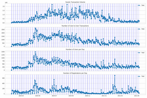
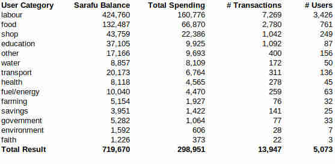
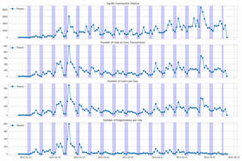
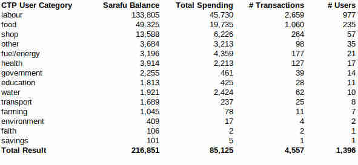

2021 Mid Year CIC Update
Transitions
Below is a summary for the entire country since 2020 till May 2021. At the end of 2019 we were forced off our old digital platform and onto a temporary one where we could only make one digital currency (Sarafu). We also started air-dropping this currency to anyone with a sim card in Kenya while trying all kinds of ways to connect Sarafu to humanitarian work. We grew from a few thousands users to over 50,000 and have seen roughly 3 Million USD worth of trade between users for basic needs - recorded in nearly 400,000 blockchain transactions. While the system has grown we've strive to return to the community based foundations we came from guided by a new director Shalia Agha..
Back to Basics
After over a year of sitting in this technical road stop (with only one currency) - all I can say is how much I miss creating community currencies one village at a time! Hopefully this month we will release a fully open source and modular version of our software and by the middle of the year be able to facilitate communities to develop their own community currencies again. The application process for creating a CIC we've been working on together with community groups, takes some of our current learning and applies them to our older pre-2020 - programs. The basic idea of for a CIC to be a producer credit - or voucher for the goods and services of a well defined group and for that group to define how they will use these credits in community projects.
Foundations in Regeneration
2020 was also the year of Syntropic Agroforestry - where community groups use it as a basis for their local groups would pool together their Sarafu and use it for maintenance and farm inputs, and after circulation in the community for school fees, haircuts, church tithing, etc. ... people can use it again for food from communal farms. This has grown out to 50 acres of such farming! These types of programs that anchor community currency to communal structures we hope to see grow more and more.
Humanitarian Focus
The Red Cross has just about completed a second pilot of CICs in informal settlements as part of COVID relief and resilience work. GIZ in Cameroon are working on their own CICs and we continue to consult many formal and informal groups on how to setup their own CICs digitally or with paper vouchers. Rather than connecting CICs to cash exchange, which creates an incentive to save them, connecting them to vulnerable assistance community asset development has remained the best practice.
Data
Below is a summary for the entire country since 2020 based on research data:

Note that while 1 Sarafu is socially pegged to 1 Kenyan Shilling. The actual value of Sarafu compared to the Kenyan shilling will vary based on the user.
The above graphic shows COVID starting in April 2020 with increased Sarafu usage, eventually ebbing off by October 2020 - leading toward a more steady state by January 2021. While registrations continue to grow currently via airdropping Sarafu- without strong community anchors that growth isn't sustainable.
Kisauni
Zooming in on Kisauni which started with Red Cross volunteers early 2021
 Note. Ignore the last data point for the morning the data was sampled.
Working in Kisauni started with the Kenyan Red Cross Cash Transfer Program (CTP)team going through and identifying the vulnerable households along with local leaders and community health volunteers. These 1,500 vulnerable householders were given cash transfers monthly while also being enrolled in CIC (Sarafu) along with their neighbors. Overall over 5,000 people in Kisauni joined the network and have traded basic needs with among each other over 13,000 times over roughly 4 months. These users are currently forming community groups that will support the program long term and also being supported by local industry partners. This is an example of airdropping 100 Sarafu onto vulnerable people in COVID crisis and working with them to form groups. 1,500 vulnerable households received cash aid (with no connection to Sarafu at all) . This cash aid helps but doesn't stay circulating in the community like CIC does. The, over 5000, users in the area form a resilient trade network that is growing daily and will continue supporting the vulnerable long term.
Above are the 1,396 CTP users that signed up for CIC so far and how much Sarafu they have spent in various categories. CIC seems to be helping them longer term than we would expect the cash transfer to and it is connecting them into a larger community of support and stable markets.
Despite many doubts, this trial of running a cash transfer program in parallel with airdropped CIC has created significant impacts and continues to grow through the adoption of local stakeholders and community groups.